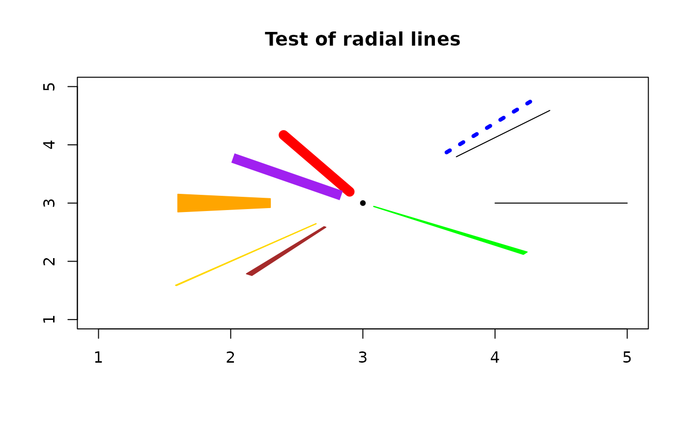

Draw a radial line
draw.radial.line.RdDraws a line radiating from a specified center, optionally expanding the line width as a function of distance from center.
Usage
draw.radial.line(start, end, center=c(0, 0), angle=0, deg=NA,
expand=FALSE, col=NA, lwd=NA, ...)Arguments
- start
Distance from center of circular area to start of line in x/y user units.
- end
Distance from center of circular area to end of line in x/y user units.
- center
The center of the circular area in x/y user units.
- angle
The angular position of the line in radians.
- deg
The angular position of the line in degrees (takes precedence if not NA).
- expand
TRUE to expand line width in proportion to distance from center.
- col
The color of the line, NA for par("col").
- lwd
The width of the line in device-specific units, NA for par("lwd").
- ...
Arguments passed to 'lines' (expand=FALSE) or 'polygon' (expand=TRUE).
Details
If the user passes a value for 'deg', this overrides any value passed to 'angle'.
If 'expand' is FALSE, the line width is constant (as specified by par("lwd").
If 'expand' is TRUE, the line width is equal to the lwd value at distance 'end' and contracts as it moves towards 'start'. When expand is 'TRUE', lty is ignored.
Examples
plot(0, xlim=c(1,5), ylim=c(1,5), main="Test of radial lines", xlab="", ylab="", type="n")
points(3, 3, pch=20)
draw.radial.line(1, 2, center=c(3,3))
draw.radial.line(1, 2, center=c(3,3), angle=pi/4)
draw.radial.line(1, 2, center=c(3,3), angle=pi/4+0.1, col="blue", lwd=4, lty=3)
draw.radial.line(0.2, 1.2, center=c(3,3), deg=120, col="red", lwd=10)
draw.radial.line(0.2, 1.2, center=c(3,3), deg=145, col="purple", lwd=10, lend=1)
draw.radial.line(0.5, 2, center=c(3,3), deg=225, expand=TRUE, col="gold")
draw.radial.line(0.7, 1.4, center=c(3,3), deg=180, expand=TRUE, col="orange", lwd=30)
draw.radial.line(0.5, 1.5, center=c(3,3), deg=235, expand=TRUE, lwd=5, col="brown")
draw.radial.line(0.1, 1.5, center=c(3,3), deg=325, expand=TRUE, lwd=5, col="green")
